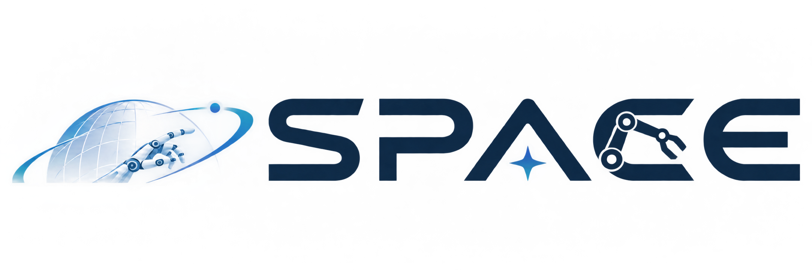

RoboFoundry: System-as-Policy Evolution for Self-Learning Embodied Agents
An embodied agent framework that learns from execution experience to improve its context, memory, and hierarchical skills across heterogeneous robots.

School of Electrical and Electronic Engineering
NTU Singapore
Robot perception and embodied agents that learn through interaction.
An embodied agent framework that learns from execution experience to improve its context, memory, and hierarchical skills across heterogeneous robots.
A topological alignment graph connects 2D observations with 3D priors to estimate robot configurations from monocular RGB images with reduced annotation requirements.
Dynamic scene representations and compositional 3D generation.
Related foundations. Selected work on representing and generating scenes that provides foundations for world modeling.
Language-aware 4D scene representations learned from object-wise video captions support time-sensitive, open-vocabulary queries in dynamic scenes.
Separate 3D objects are generated from a single image, then aligned through differentiable rendering to build a coherent scene composition.
Language-grounded 3D understanding and large-scale scene reconstruction.
Sparse coefficient fields accelerate high-dimensional language feature rendering and open-vocabulary querying in 3D scenes.
Momentum-based self-distillation improves consistency across independently trained blocks for large-scale 3D scene reconstruction.
A 3D language field built with Gaussian splatting enables efficient open-vocabulary object localization and semantic segmentation.
Connecting visual evidence, language, and reasoning across modalities.
Multimodal preferences are converted into explicit, verifiable rubrics, then used with Rubric Policy Optimization to align text-to-image generation and image editing with human judgments.
Vision foundation models and language models work together with automated prompt optimization to reason about social relationships in images.
Pretrained vision-language and multilingual translation models are aligned to transfer visual knowledge into multimodal machine translation.
Ordered language prompts connect visual features with rank concepts in CLIP for language-guided ordinal regression.